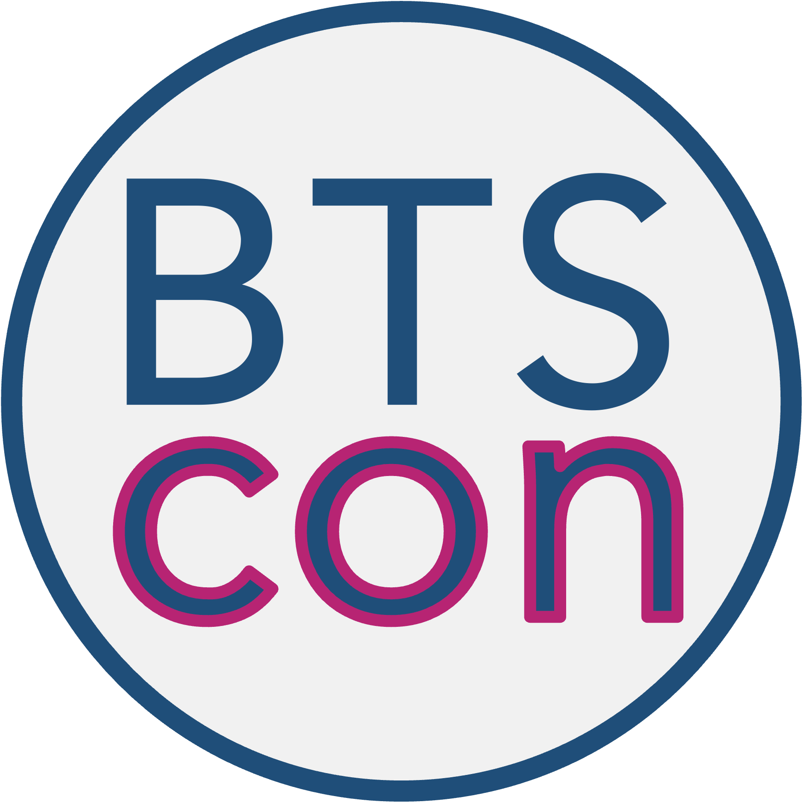

Treći po redu BTSCON (Big Team Science Conference) biće održan onlajn, preko aplikacije Zoom, od 8. do 10. oktobra 2024. godine. Cilj konferencije je da okupi multidisciplinarnu grupu istraživača, finansijera i ostalih zainteresovanih strana kako bi se razgovaralo o pomacima, izazovima i prilikama u domenu kolaborativnih istraživanja (eng. Big Team Science), kao i otvorene nauke (eng. Open Science).
Prvog dana BTSCON-a, ABRIR tim organizuje panel posvećen rezultatima hakatona sa istraživačima, studentima i bibliotekarima iz zemalja tzv. globalnog juga i Jugoistočne Evrope. Jedan od tih hakatona, za učesnike iz Bosne i Hercegovine i Srbije, ABRIR je sproveo u junu ove godine, u saradnji sa LIRA Labom i OSCS-om. Panel će se održati u utorak, 8. oktobra, 16.00–16.55 (po beogradskom vremenu).
Istražite program BTSCON-a u celini na:
https://bigteamscienceconference.github.io/program/
Registracija je obavezna i besplatna (uz mogućnost da platite koliko želite, i ako možete):
https://bigteamscienceconference.github.io/registration/